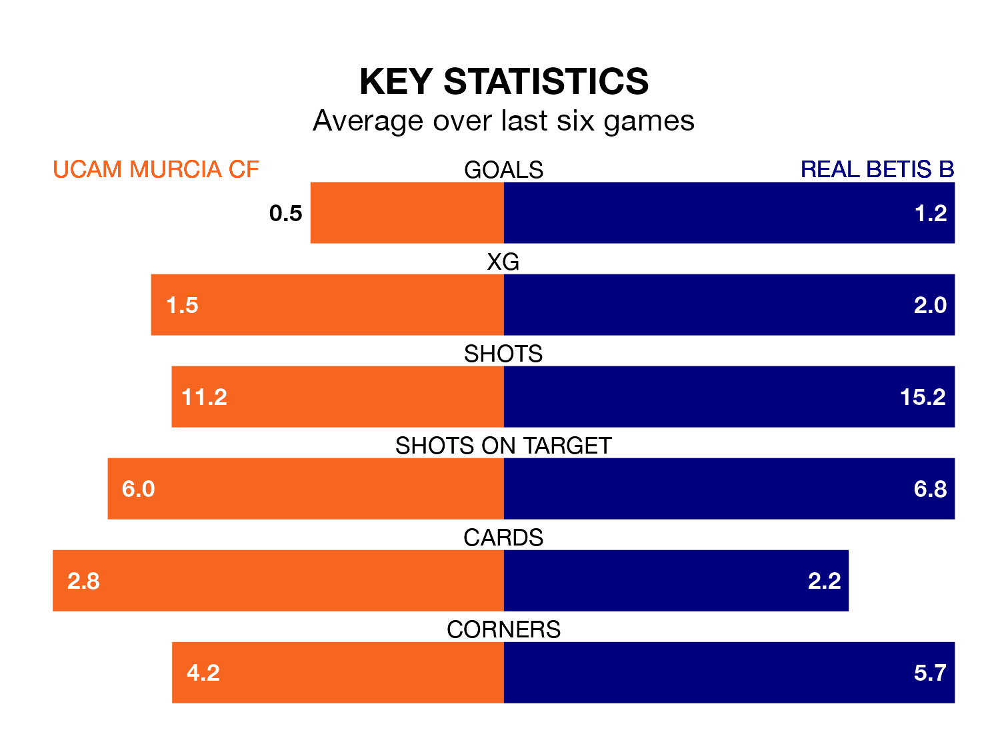

Real Betis B face UCAM Murcia CF on Sunday seeking to protect their formidable unbeaten run in the Segunda División RFEF Group 4.
Betis B are unbeaten in 11, with five wins and six draws, ahead of the 11am kick-off.
They face an UCAM Murcia team who have won three and drawn four over the same number of games.
With 31 goals in 23 games so far this season, Betis B are the league's second-highest scorers with 1.3 goals per game. And they are conceding fewer than average, letting in 20 goals at a rate of 0.9 per game.
UCAM Murcia, meanwhile, are average scorers, with 1.0 goal per game. They have also conceded 1.0 goal per game.
In the last 10 years, UCAM Murcia and Betis B have played each other on 13 occasions. UCAM Murcia won seven of them, Betis B three, and they drew three times.
On average, UCAM Murcia scored 1.1 goals and Betis B 0.5 in those matches.
Their last meeting was on October 15, when Betis B won 2-0 at home.
The visitors are fourth in the table after 23 games, of which they have won nine and drawn 10, earning 37 points.
The home side are five places behind Betis B in ninth, with eight wins and six draws putting them on 30 points.
UCAM Murcia's last match was on February 18, a 0-0 draw against La Unión Atlético.
Betis B beat Vélez 2-0 last time out, also on Sunday, with Yassin Fékir on the scoresheet.
Updated: 10:08 (UTC), 23/02/24